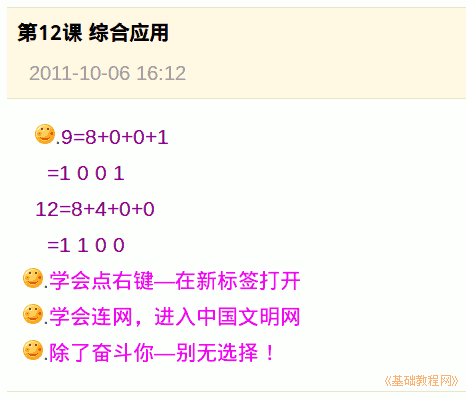

2011-2012 第一学期七年级电脑操作基础教学课程设计
作者：TeliuTe 来源：基础教程网
十二、综合应用 返回目录 下一课
学习目标：巩固复习数制的转换，知识小结一下；
注意事项：先做练习，再去网上写祝福语；
1、综合应用
1）完成两道二进制转换（任选）；
2）学会点右键－在新标签打开；
3）学会联网，进入中国文明网；
4）写一句文明礼貌道德的寄语或自己喜欢的名言；

板书设计：第12课 综合应用
1.完成两道二进制转换（任选）
2.学会点右键-在新标签打开
3.学会联网，进入中国文明网
4.写一句文明礼貌道德的寄语
5.--
9=？ 13=？
10=？14=？
11=？15=？
12=？
课后记 2011-10-6 23:40：
这次再复习一节课，应该可以学会了
实在不会的也没办法，十指有长短
--
后两个班直接将四个数字套进去
这样就不用绕那么多弯，也好理解一下
--
按权展开是难点，讲完让学生提问
对于为什么落1，是从进位角度
--
来了一个文明办的通知
让学生去提交国庆寄语
--
上次好像弄过一次，拍录像什么的
这次发通知下来，练练应用也好
--
连网要讲一下怎么通过代理上网
等日志和指法打完了，就可以接着讲
--
上的是文明网，结果寄语都是文明礼貌的
还忘记选地区了，当作是练习吧
--
大多数都提交了，明天看看能否显示
还要审核，速度那么慢的
--
以后再上的时候，也到一个网上发个帖？
这样上网前有个事做，写些什么内容呢？
--
后面试试看，找个教育网上练习网络应用
内容再找找相关的看看
本节学习了综合应用的基础知识，如果你成功地完成了练习，请继续学习下一课内容；
返回目录 下一课
本教程由86团学校TeliuTe制作|著作权所有
基础教程网：http://teliute.org/
美丽的校园……
转载和引用本站内容，请保留作者和本站链接。